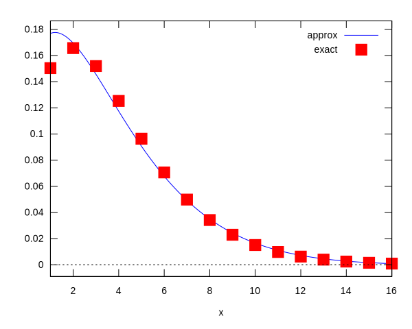

This page was generated from
source/diffusion-approximation/momentapprox.ipynb.
 or
or
Moment-based approximation to the BID process¶
This is the exact generating function solution to the birth-immigration-death process.
[1]:
genfunc (x, t, n0, kb, kd) :=
((kd * %e^(- (kb - kd) * t) - kd +
(kd - kb * %e^(- (kb - kd) * t)) * x) /
(kd * %e^(- (kb - kd) * t) - kb +
(kb - kb * %e^(- (kb - kd) * t)) * x))^n0;
[1]:
\[\tag{${\it \%o}_{1}$}{\it genfunc}\left(x , t , n_{0} , {\it kb} , {\it kd}\right):=\left(\frac{{\it kd}\,e^{\left(-\left({\it kb}-{\it kd}\right)\right)\,t}-{\it kd}+\left({\it kd}-{\it kb}\,e^{\left(-\left({\it kb}-{\it kd}\right)\right)\,t}\right)\,x}{{\it kd}\,e^{\left(-\left({\it kb}-{\it kd}\right)\right)\,t}-{\it kb}+\left({\it kb}-{\it kb}\,e^{\left(-\left({\it kb}-{\it kd}\right)\right)\,t}\right)\,x}\right)^{n_{0}}\]
[11]:
probdist (m, t, n0, kb, kd) :=
block([gf],
gf : genfunc(z, t, n0, kb, kd),
makelist([j, subst (0, z, diff(gf, z, j) / (j!))],
j, 0, m))$
The trial distribution.
[7]:
trialdist : (c0 + c1*x + c2*x^2 + c3*x^3) * %e^(-k*x);
[7]:
\[\tag{${\it \%o}_{7}$}\left(c_{3}\,x^3+c_{2}\,x^2+c_{1}\,x+c_{0}\right)\,e^ {- k\,x }\]
The moments of the trial distribution.
[8]:
m0 : -subst(0, x, integrate(trialdist, x));
m1 : -subst(0, x, integrate(x * trialdist, x));
m2 : -subst(0, x, integrate(x^2 * trialdist, x));
m3 : -subst(0, x, integrate(x^3 * trialdist, x));
m4 : -subst(0, x, integrate(x^4 * trialdist, x));
[8]:
\[\tag{${\it \%o}_{8}$}\frac{c_{0}}{k}+\frac{c_{1}}{k^2}+\frac{2\,c_{2}}{k^3}+\frac{6\,c_{3}}{k^4}\]
[8]:
\[\tag{${\it \%o}_{9}$}\frac{c_{0}}{k^2}+\frac{2\,c_{1}}{k^3}+\frac{6\,c_{2}}{k^4}+\frac{24\,c_{3}}{k^5}\]
[8]:
\[\tag{${\it \%o}_{10}$}\frac{2\,c_{0}}{k^3}+\frac{6\,c_{1}}{k^4}+\frac{24\,c_{2}}{k^5}+\frac{120\,c_{3}}{k^6}\]
[8]:
\[\tag{${\it \%o}_{11}$}\frac{6\,c_{0}}{k^4}+\frac{24\,c_{1}}{k^5}+\frac{120\,c_{2}}{k^6}+\frac{720\,c_{3}}{k^7}\]
[8]:
\[\tag{${\it \%o}_{12}$}\frac{24\,c_{0}}{k^5}+\frac{120\,c_{1}}{k^6}+\frac{720\,c_{2}}{k^7}+\frac{5040\,c_{3}}{k^8}\]
[23]:
simeqs: solve([m1 = v1, m2 = v2, m3 = v3, m4 = v4], [c0, c1, c2, c3])$
[32]:
simeqs[1][1];
simeqs[1][2];
simeqs[1][3];
simeqs[1][4];
[32]:
\[\tag{${\it \%o}_{32}$}c_{0}=\frac{-k^5\,v_{4}+15\,k^4\,v_{3}-60\,k^3\,v_{2}+60\,k^2\,v_{1}}{6}\]
[32]:
\[\tag{${\it \%o}_{33}$}c_{1}=-\frac{-k^6\,v_{4}+14\,k^5\,v_{3}-50\,k^4\,v_{2}+40\,k^3\,v_{1}}{4}\]
[32]:
\[\tag{${\it \%o}_{34}$}c_{2}=\frac{-k^7\,v_{4}+13\,k^6\,v_{3}-42\,k^5\,v_{2}+30\,k^4\,v_{1}}{12}\]
[32]:
\[\tag{${\it \%o}_{35}$}c_{3}=-\frac{-k^8\,v_{4}+12\,k^7\,v_{3}-36\,k^6\,v_{2}+24\,k^5\,v_{1}}{144}\]
As an example, consider the parameters n0 = 3, t = 1, kb = 1.1, kd = 0.9
[35]:
exdist : probdist(30, 1, 3, 1.1, 0.9)$
[40]:
exdist[1];
exdist[2];
exdist[3];
[40]:
\[\tag{${\it \%o}_{44}$}\left[ 0 , 0.09067119098877184 \right] \]
[40]:
\[\tag{${\it \%o}_{45}$}\left[ 1 , 0.1503654864396397 \right] \]
[40]:
\[\tag{${\it \%o}_{46}$}\left[ 2 , 0.1656835449951194 \right] \]
Compute the moments for the exact distribution.
[43]:
numop(n, gf) :=
if n=0 then gf
else numop(n-1, z * diff(gf, z))$
mom(m, t, n0, kb, kd) :=
factor(subst(1, z, numop(m, genfunc(z, t, n0, kb, kd))))$
[44]:
psubst([kb = 1.1, kd = 0.9], mom(1, 1, 3, kb, kd));
psubst([kb = 1.1, kd = 0.9], mom(2, 1, 3, kb, kd));
psubst([kb = 1.1, kd = 0.9], mom(3, 1, 3, kb, kd));
psubst([kb = 1.1, kd = 0.9], mom(4, 1, 3, kb, kd));
[44]:
\[\tag{${\it \%o}_{51}$}3.66420827448051\]
[44]:
\[\tag{${\it \%o}_{52}$}21.53908046320445\]
[44]:
\[\tag{${\it \%o}_{53}$}166.2201628868458\]
[44]:
\[\tag{${\it \%o}_{54}$}1578.74199416697\]
[45]:
sum(exdist[k][2], k, 1, 31);
sum((k - 1) * exdist[k][2], k, 1, 31);
sum((k - 1)^2 * exdist[k][2], k, 1, 31);
sum((k - 1)^3 * exdist[k][2], k, 1, 31);
sum((k - 1)^4 * exdist[k][2], k, 1, 31);
[45]:
\[\tag{${\it \%o}_{55}$}0.999999008987924\]
[45]:
\[\tag{${\it \%o}_{56}$}3.664176179760895\]
[45]:
\[\tag{${\it \%o}_{57}$}21.53803780407596\]
[45]:
\[\tag{${\it \%o}_{58}$}166.1861732620685\]
[45]:
\[\tag{${\it \%o}_{59}$}1577.629734070915\]
Solve for the parameters. We frist solve for the c’s because those equations are linear.
[47]:
csol : solve([m1 = 3.664, m2 = 21.54, m3 = 166.22, m4 = 1578.7], [c0, c1, c2, c3])$
rat: replaced -3.664 by -458/125 = -3.664
rat: replaced -21.54 by -1077/50 = -21.54
rat: replaced -166.22 by -8311/50 = -166.22
rat: replaced -1578.7 by -15787/10 = -1578.7
[52]:
csol[1][1];
csol[1][2];
csol[1][3];
csol[1][4];
[52]:
\[\tag{${\it \%o}_{67}$}c_{0}=-\frac{78935\,k^5-124665\,k^4+64620\,k^3-10992\,k^2}{300}\]
[52]:
\[\tag{${\it \%o}_{68}$}c_{1}=\frac{78935\,k^6-116354\,k^5+53850\,k^4-7328\,k^3}{200}\]
[52]:
\[\tag{${\it \%o}_{69}$}c_{2}=-\frac{78935\,k^7-108043\,k^6+45234\,k^5-5496\,k^4}{600}\]
[52]:
\[\tag{${\it \%o}_{70}$}c_{3}=\frac{394675\,k^8-498660\,k^7+193860\,k^6-21984\,k^5}{36000}\]
We then solve a polynomial equation for k.
[60]:
normer : factor(psubst(csol, m0) - 1);
allroots(normer);
[60]:
\[\tag{${\it \%o}_{79}$}-\frac{394675\,k^4-664880\,k^3+387720\,k^2-87936\,k+6000}{6000}\]
[60]:
\[\tag{${\it \%o}_{80}$}\left[ k=0.1182905815725801 , k=0.3312641131423235 , k=0.08129861135120636\,i+0.6175359483922156 , k=0.6175359483922156-0.08129861135120636\,i \right] \]
[59]:
ccsol : cons(k = 0.3313, subst(0.3313 , k, csol[1]));
[59]:
\[\tag{${\it \%o}_{78}$}\left[ k=0.3313 , c_{0}=0.1449713066598004 , c_{1}=0.1112482952010575 , c_{2}=-0.0100714872419167 , c_{3}=2.062991279345664 \times 10^{-4} \right] \]
Check the answer.
[61]:
psubst(ccsol, [m0, m1, m2, m3, m4]);
[61]:
\[\tag{${\it \%o}_{81}$}\left[ 0.999955479043132 , 3.663999999999999 , 21.54 , 166.2200000000001 , 1578.700000000009 \right] \]
Substitute the numerical values into the trial distrbution.
[62]:
approxdist : psubst(ccsol, trialdist);
[62]:
\[\tag{${\it \%o}_{82}$}\left(2.062991279345664 \times 10^{-4}\,x^3-0.0100714872419167\,x^2+0.1112482952010575\,x+0.1449713066598004\right)\,e^ {- 0.3313\,x }\]
Plot against the exact solution.
[69]:
set_plot_option([svg_file, "maxplot-moment-gen.svg"])$
[70]:
plot2d([approxdist, [discrete, exdist]], [x, 1, 16],
[legend, "approx", "exact"], [style, lines, points]);

[70]:
\[\tag{${\it \%o}_{90}$}\left[ \mbox{ /tmp/maxout66.gnuplot } , \mbox{ /tmp/maxplot-moment-gen.svg } \right] \]